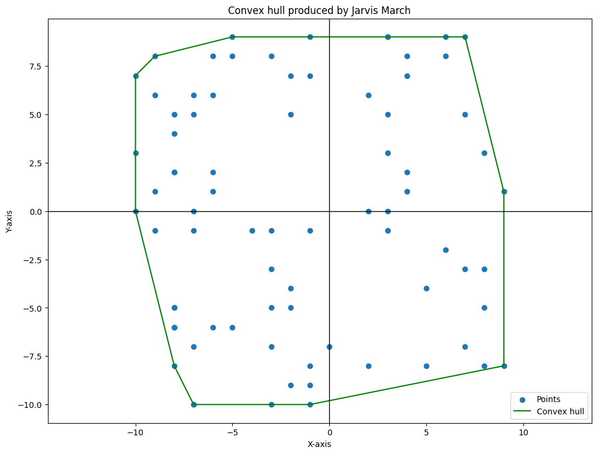

Jarvis March, also known as the gift-wrapping algorithm, is a method used in computational geometry to find the convex hull of a set of points. A convex hull is formed by stretching a rubber band around the outermost points in a set.
Here’s how the Jarvis March algorithm works:
Finding the leftmost point: This is guaranteed to be part of the convex hull.
Selecting the next point: Look at all the remaining points and determine which one is the most counterclockwise relative to the current point. If there are ties, it means that if multiple points lie on the same line, choose the farthest one. This ensures the hull is as wide as possible.
Repeating: This process should be continued, moving to the most counterclockwise point each time till you loop back to the starting point.
Completion: Once you return to the initial point, the set of points you’ve accumulated forms the convex hull.
/**
* Returns the leftmost point from an array of points.
*
* @param {Array<Array<number>>} points - The array of points to search from.
* @return {Array<number>} The leftmost point from the array.
*/
function leftmostPoint(points) {
let sorted_points = points.sort(function (a, b) {
return a[0] - b[0] || a[1] - b[1];
});
let leftmostPoint = sorted_points[0];
return leftmostPoint;
}
This function will be used to determine which line is the most counterclockwise. The more negative the cross product the more it is tilted in the counterclockwise direction. It is also used in checking if the points are collinear.
/**
* Calculate the cross product of two vectors.
*
* @param {Array} origin - The origin point of the vectors
* @param {Array} p1 - The first vector
* @param {Array} p2 - The second vector
* @return {number} The cross product of the two vectors
*/
export function crossProduct(origin, p1, p2) {
return (p1[0] - origin[0]) * (p2[1] - origin[1]) - (p1[1] - origin[1]) * (p2[0] - origin[0]);
}
Checking if the points are collinear
Distance between two points
In case there are two vectors(directed towards the point away from the origin) whose counterclockwise orientation is
the same meaning that both the points lie on the same line then the point whose distance is more from the origin will be chosen.
/**
* Calculates the Euclidean distance between two points in a 2D space.
*
* @param {Array} p1 - The coordinates of the first point [x, y]
* @param {Array} p2 - The coordinates of the second point [x, y]
* @return {number} The distance between the two points
*/
export function distance(p1, p2) {
return Math.sqrt(Math.pow(p1[0] - p2[0], 2) + Math.pow(p1[1] - p2[1], 2));
}
This function finds the next vertex that should be part of the convex hull.
The function initialises the start vertex as the leftmost point. Then the next
vertex is decided on the basis of the cross product and in case both lie in the same direction
then distance is used as a tie breaker.
/**
* Finds the next vertex in a given set of points based on the current vertex.
*
* @param {Array<Array<number>>} points - The array of points representing the vertices.
* @param {Array<number>} currentVertex - The current vertex.
* @return {Array<number>} The next vertex.
*/
function findNextVertex(points, currentVertex) {
let nextVertex = points[0];
for (let i = 1; i < points.length; i++) {
let p = points[i];
if (p[0] === currentVertex[0] && p[1] === currentVertex[1]) continue;
let cp = crossProduct(currentVertex, nextVertex, p);
if (cp > 0 || nextVertex[0] === currentVertex[0] && nextVertex[1] === currentVertex[1] || (cp === 0 && distance(currentVertex, p) > distance(currentVertex, nextVertex))) nextVertex = p;
}
return nextVertex;
}
If number of points are less than 3 then no convex hull is possible
/**
* Performs the Jarvis March algorithm to find the convex hull of a set of points.
*
* @param {Array} points - The array of points to compute the convex hull for.
* @return {Array} The array representing the points on the convex hull.
*/
function jarvisMarch(points) {
if (points.length < 3) return points;
let hull = [], startPoint = leftmostPoint(points), startVertex = startPoint, currentVertex = startVertex;
while (true) {
hull.push(currentVertex);
let nextVertex = findNextVertex(points, currentVertex);
if (nextVertex[0] === startVertex[0] && nextVertex[1] === startVertex[1]) break;
else currentVertex = nextVertex;
}
return hull;
}
| Time taken (ms) | n | h |
|---|---|---|
| 0.8956 | 79 | 7 |
| 0.2615 | 9 | 5 |
| 0.4659 | 53 | 12 |
| 0.1936 | 8 | 6 |
| 0.7563 | 44 | 9 |
| 0.2428 | 18 | 8 |
| 0.7297 | 29 | 9 |
| 0.3974 | 84 | 7 |
| 0.2678 | 24 | 6 |
| 0.7065 | 28 | 9 |
| 0.7943 | 39 | 10 |
| 0.4668 | 62 | 10 |
| 0.9418 | 53 | 10 |
| 0.8167 | 84 | 4 |
| 0.3848 | 12 | 6 |
| 0.3827 | 81 | 8 |
| 0.5747 | 50 | 9 |
| 0.461 | 88 | 10 |
| 1.0563 | 74 | 9 |
| 0.4286 | 71 | 12 |
| 0.5311 | 50 | 9 |
| 0.4311 | 89 | 9 |
| 0.3709 | 35 | 9 |
| 0.4291 | 96 | 5 |
| 0.5276 | 15 | 10 |
| 0.4615 | 10 | 5 |
| 0.7526 | 98 | 7 |
| 0.4894 | 17 | 5 |
| 0.7001 | 63 | 8 |
| 0.7378 | 33 | 7 |
| 0.6242 | 59 | 10 |
| Memory consumed (KB) | n | h |
|---|---|---|
| 5582.05 | 79 | 7 |
| 5568.91 | 9 | 5 |
| 5577.48 | 53 | 12 |
| 5568.79 | 8 | 6 |
| 5576.2 | 44 | 9 |
| 5570.82 | 18 | 8 |
| 5572.72 | 29 | 9 |
| 5584.05 | 84 | 7 |
| 5571.84 | 24 | 6 |
| 5572.48 | 28 | 9 |
| 5574.25 | 39 | 10 |
| 5579.38 | 62 | 10 |
| 5577.59 | 53 | 10 |
| 5583.88 | 84 | 4 |
| 5569.38 | 12 | 6 |
| 5582.41 | 81 | 8 |
| 5576.76 | 50 | 9 |
| 5584.79 | 88 | 10 |
| 5580.65 | 74 | 9 |
| 5580.6 | 71 | 12 |
| 5576.88 | 50 | 9 |
| 5585.47 | 89 | 9 |
| 5573.31 | 35 | 9 |
| 5585.98 | 96 | 5 |
| 5570.04 | 15 | 10 |
| 5568.95 | 10 | 5 |
| 5587.03 | 98 | 7 |
| 5570.32 | 17 | 5 |
| 5578.94 | 63 | 8 |
| 5573.03 | 33 | 7 |
| 5579.17 | 59 | 10 |
Taking 89 points as input
n = [
[ -10, 0 ], [ -10, 3 ], [ -10, 7 ], [ -9, -1 ], [ -9, 1 ],[ -9, 6 ], [ -9, 8 ], [ -8, -8 ], [ -8, -6 ],
[ -8, -6 ],[ -8, -5 ], [ -8, -5 ], [ -8, 2 ], [ -8, 2 ], [ -8, 4 ],
[ -8, 5 ], [ -7, -10 ], [ -7, -10 ], [ -7, -7 ], [ -7, -1 ],
[ -7, 0 ], [ -7, 5 ], [ -7, 6 ], [ -6, -6 ], [ -6, 1 ],
[ -6, 2 ], [ -6, 6 ], [ -6, 8 ], [ -5, -6 ], [ -5, 8 ],
[ -5, 9 ], [ -4, -1 ], [ -3, -10 ], [ -3, -7 ], [ -3, -5 ],
[ -3, -3 ], [ -3, -1 ], [ -3, 8 ], [ -2, -9 ], [ -2, -5 ],
[ -2, -4 ], [ -2, 5 ], [ -2, 7 ], [ -1, -10 ], [ -1, -9 ],
[ -1, -8 ], [ -1, -1 ], [ -1, 7 ], [ -1, 9 ], [ 0, -7 ],
[ 2, -8 ], [ 2, 0 ], [ 2, 6 ], [ 3, -1 ], [ 3, 0 ],
[ 3, 3 ], [ 3, 5 ], [ 3, 9 ], [ 3, 9 ], [ 4, 1 ],
[ 4, 2 ], [ 4, 7 ], [ 4, 8 ], [ 5, -8 ], [ 5, -4 ],
[ 6, -2 ], [ 6, 8 ], [ 6, 9 ], [ 7, -7 ], [ 7, -3 ],
[ 7, 5 ], [ 7, 9 ], [ 8, -8 ], [ 8, -5 ], [ 8, -3 ],
[ 8, 3 ], [ 9, -8 ], [ 9, 1 ]
]
ConvexHull = [
[ -10, 0 ], [ -10, 7 ],
[ -9, 8 ], [ -5, 9 ],
[ 7, 9 ], [ 9, 1 ],
[ 9, -8 ], [ -1, -10 ],
[ -7, -10 ], [ -8, -8 ]
]
Plot of the convex hull

Taking only 2 points as input
n=[ [ 1, 1 ], [ 3, 2 ] ]
convexHull=[]
Convex hull cannot constructed for less than 3 points
Taking 3 collinear points
n=[[1,1],[2,2],[4,4]]
convexHull=[]
A polygon is a plane figure that consists of finite number of line segments which connected to form a closed polygonal chain. A single line segment itself doesn’t form a closed polygonal chain. Thus, a line segment cannot be a Convex Hull.